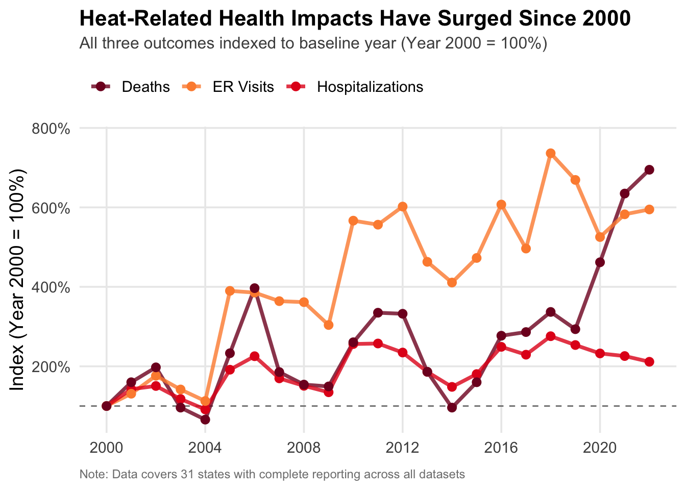
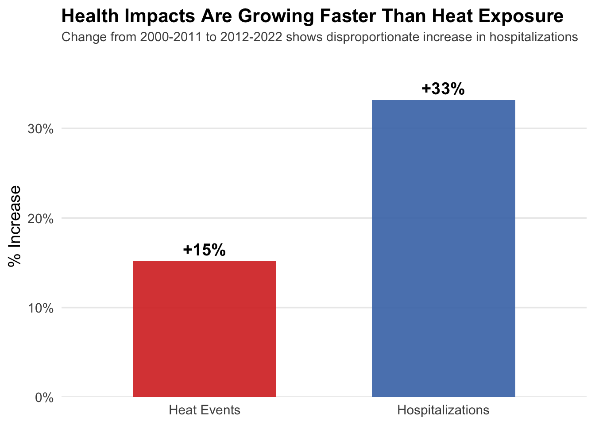
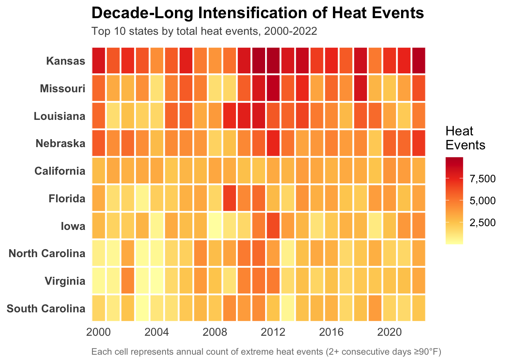
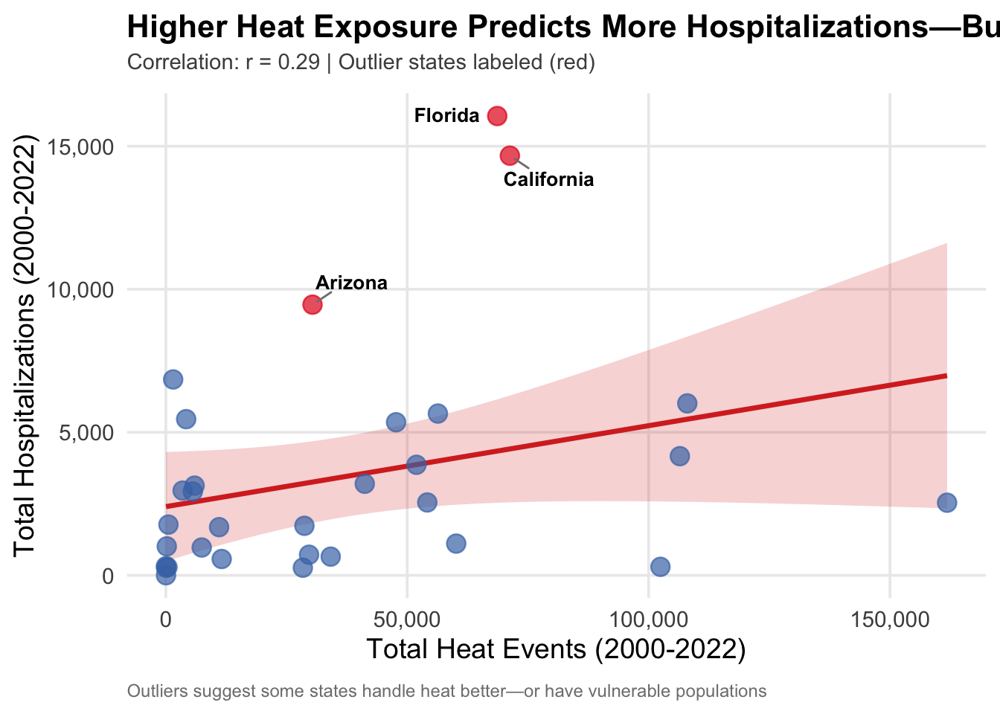
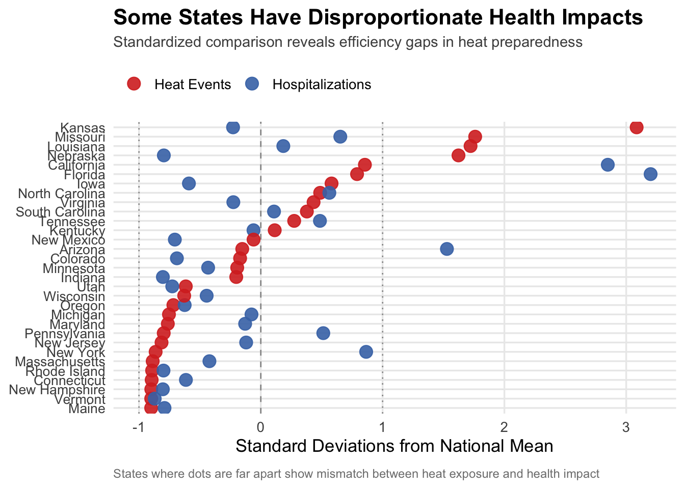
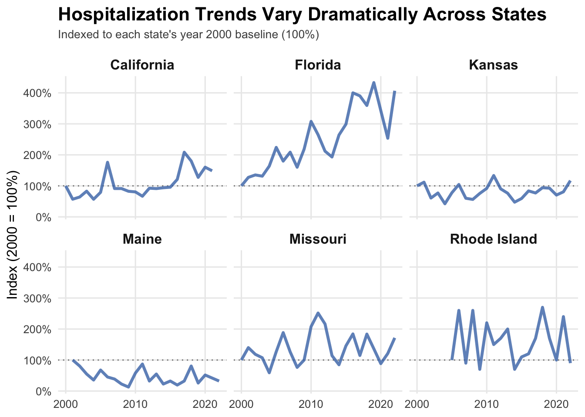
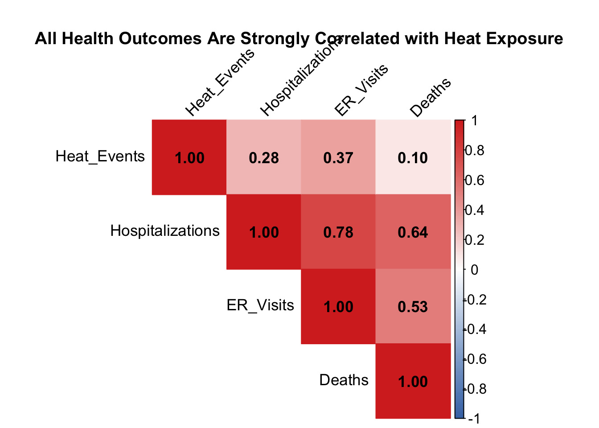
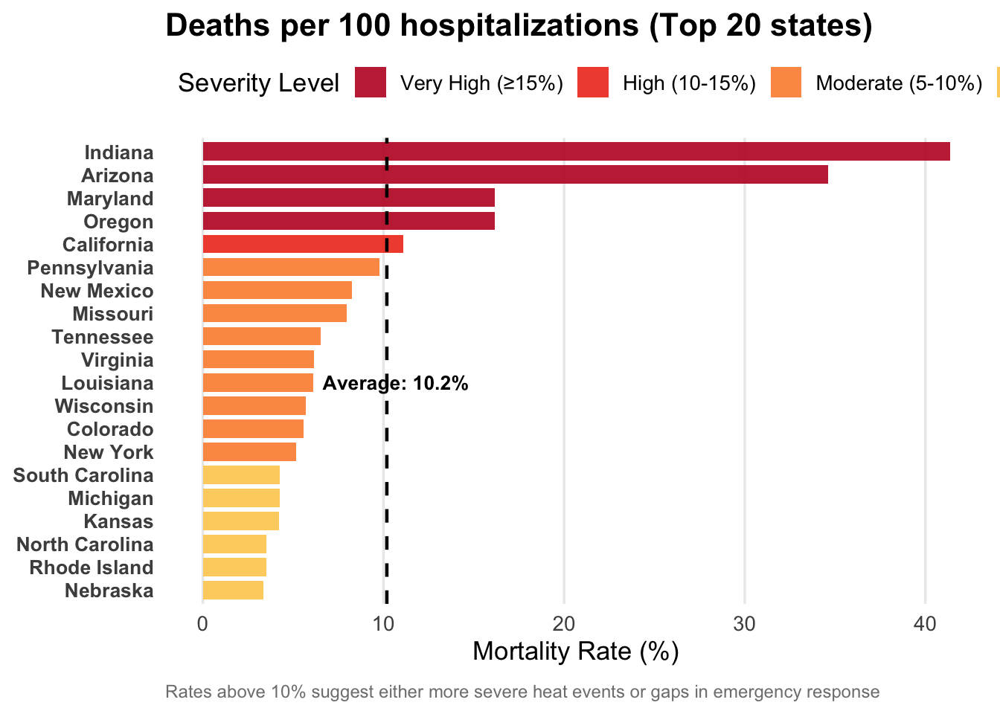
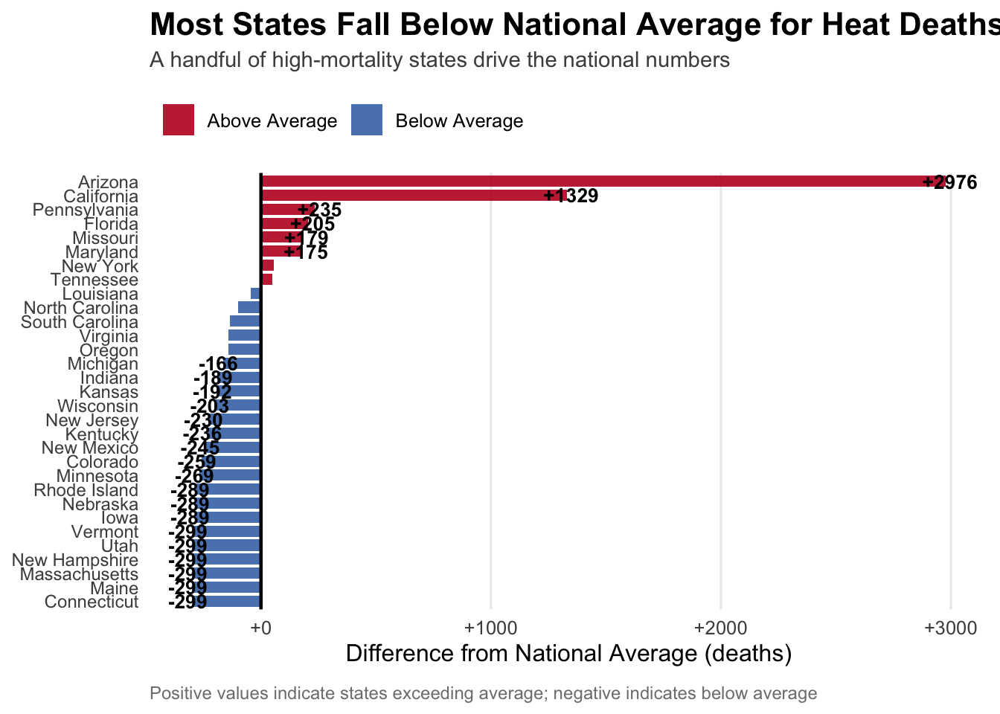

Attaching package: 'scales'
The following object is masked from 'package:purrr':
discard
The following object is masked from 'package:readr':
col_factor
Between 2000 and 2023, the CDC tracked over 74,000 extreme heat events across the United States—periods where temperatures exceeded 90°F for two or more consecutive days. These events translate directly into public health impacts: emergency room visits, hospitalizations, and deaths.
We’re working with four datasets from the CDC’s Environmental Public Health Tracking Network covering extreme heat events, hospitalizations, ER visits, and deaths. While data exists for more states, we filtered down to 31 states that have complete reporting across all four datasets. This gives us a consistent picture of how heat exposure might connect to health outcomes, though it does mean we’re missing data from 20 states.
What we found: heat-related health problems aren’t just increasing but that they’re getting worse faster.
First, let’s look at how these health impacts have changed over the past two decades. Since we’re comparing three different metrics (ER visits happen way more often than deaths), we used indexing to put them on the same scale. For each outcome, we divided every year’s value by the year 2000 value and multiplied by 100. This means year 2000 equals 100% for all three lines, and we can thus see the relative rate of change for each outcome.
Code
# Combined health outcomes over timeoutcomes_time <-bind_rows( hosp |>group_by(Year) |>summarise(value =sum(Hosps, na.rm =TRUE), outcome ="Hospitalizations"), er_visits |>group_by(Year) |>summarise(value =sum(ER.Visits, na.rm =TRUE), outcome ="ER Visits"), deaths |>group_by(Year) |>summarise(value =sum(as.numeric(Deaths), na.rm =TRUE), outcome ="Deaths"))# Calculate percentage of 2000 baseline for each outcomeoutcomes_indexed <- outcomes_time |>group_by(outcome) |>mutate(baseline = value[Year ==min(Year)],index = (value / baseline) *100) |>ungroup()ggplot(outcomes_indexed, aes(x = Year, y = index, color = outcome)) +geom_hline(yintercept =100, linetype ="dashed", color ="gray50", linewidth =0.5) +geom_line(linewidth =1.3, alpha =0.8) +geom_point(size =2.5) +scale_color_manual(values =c("Hospitalizations"="#e31a1c", "ER Visits"="#fd8d3c", "Deaths"="#800026") ) +scale_y_continuous(labels =function(x) paste0(x, "%"),expand =expansion(mult =c(0.05, 0.1))) +scale_x_continuous(breaks =seq(2000, 2022, by =4)) +labs(title ="Heat-Related Health Impacts Have Surged Since 2000",subtitle ="All three outcomes indexed to baseline year (Year 2000 = 100%)",x =NULL,y ="Index (Year 2000 = 100%)",color =NULL,caption ="Note: Data covers 31 states with complete reporting across all datasets" ) +theme_minimal(base_size =14) +theme(plot.title =element_text(face ="bold", size =16, hjust =0, margin =margin(b =5)),plot.subtitle =element_text(size =12, color ="gray30", hjust =0, margin =margin(b =10)),legend.position ="top",legend.justification ="left",panel.grid.minor =element_blank(),plot.caption =element_text(size =9, color ="gray50", hjust =0, margin =margin(t =10)) )

All three outcomes have increased significantly since 2000, with ER visits roughly doubling and hospitalizations increasing substantially. ER visits show the most dramatic growth, spiking to over 700% of baseline in 2019, while hospitalizations have roughly doubled. The most striking pattern is in recent years, both ER visits and deaths surge to unprecedented levels between 2019 and 2022, suggesting the problem is accelerating rather than stabilizing.
However, the dramatic spikes we see in 2019-2022—particularly ER visits reaching over 700% of baseline—raise an important question: could COVID-19 be influencing these patterns? The pandemic could affect heat-related health data in several ways: healthcare system strain making heat impacts more severe, changes in reporting practices, people staying home more without adequate cooling, or even certain complications leading to some cases being misattributed. We need to thus be cautious about interpreting the most recent years’ trends as solely climate-driven.
3.2.2 Heat Exposure and Health Impacts Move Together
The surge in health outcomes suggests increased heat exposure, but we need to verify this connection directly. To compare heat events with hospitalizations, we standardized both by converting them to z-scores. This shows how many standard deviations each year is from its average: when both lines spike at the same time, it confirms they’re moving in sync.
Code
# Create combined dataset with annual aggregatescombined <- heat_events |>group_by(Year) |>summarise(heat_events =sum(EHE, na.rm =TRUE)) |>left_join( hosp |>group_by(Year) |>summarise(hospitalizations =sum(Hosps, na.rm =TRUE)),by ="Year" )combined_standardized <- combined |>mutate(heat_z =scale(heat_events)[,1],hosp_z =scale(hospitalizations)[,1] ) |>pivot_longer(cols =c(heat_z, hosp_z),names_to ="Metric",values_to ="Standardized_Value")ggplot(combined_standardized, aes(x = Year, y = Standardized_Value, color = Metric)) +geom_hline(yintercept =0, linetype ="dashed", color ="gray50") +geom_line(linewidth =1.2) +geom_point(size =2.5) +scale_color_manual(values =c("heat_z"="firebrick", "hosp_z"="royalblue"),labels =c("Heat Events", "Hospitalizations") ) +labs(title ="Trends in Heat Events and Hospitalizations",subtitle ="Standardized values show synchronized spikes in extreme heat and hospitalizations",x ="Year",y ="Standard Deviations from Mean",color ="" ) +theme_minimal(base_size =12) +theme(plot.title =element_text(face ="bold", size =14),plot.subtitle =element_text(size =10, color ="gray30", hjust =0),legend.position ="top" )
The two lines generally move together, with both showing an upward trend and co-occurring peaks in years like 2011. However, the relationship isn’t perfectly synchronized. In 2018, for example, hospitalizations peaked while heat events remained near average, suggesting that factors beyond just heat exposure matter. This could reflect changes in population vulnerability, healthcare access, or reporting practices. The imperfect correlation points to an important reality: while heat exposure is a key driver of health impacts, certain other factors such as local preparedness, demographics, and infrastructure likely also play crucial roles.
3.2.3 The Problem Is Accelerating
We’ve seen that both heat exposure and health impacts are increasing, but the question is: at what rate? To understand if the problem is getting worse faster, we broke the data into two equal time periods and calculated the percentage increase from one period to the next.
Code
# Calculate period averages for two equal periodsperiod_summary <- combined |>mutate(period =case_when( Year <=2011~"2000-2011",TRUE~"2012-2022" )) |>group_by(period) |>summarise(avg_heat =mean(heat_events),avg_hosp =mean(hospitalizations) ) |>mutate(heat_pct_change = (avg_heat /lag(avg_heat) -1) *100,hosp_pct_change = (avg_hosp /lag(avg_hosp) -1) *100 )# Reshape for plotting - only second period (which has the % changes)period_long <- period_summary |>filter(!is.na(heat_pct_change)) |># Only keep row with calculated changesselect(period, heat_pct_change, hosp_pct_change) |>pivot_longer(cols =c(heat_pct_change, hosp_pct_change),names_to ="metric",values_to ="pct_change") |>mutate(metric =factor(metric, levels =c("heat_pct_change", "hosp_pct_change"),labels =c("Heat Events", "Hospitalizations")))ggplot(period_long, aes(x = metric, y = pct_change, fill = metric)) +geom_col(width =0.6, alpha =0.9) +geom_text(aes(label =sprintf("+%.0f%%", pct_change)), vjust =-0.5, size =5, fontface ="bold") +scale_fill_manual(values =c("Heat Events"="#d73027", "Hospitalizations"="#4575b4"),guide ="none") +scale_y_continuous(labels =function(x) paste0(x, "%"), limits =c(0, max(period_long$pct_change) *1.15),expand =c(0, 0)) +labs(title ="Health Impacts Are Growing Faster Than Heat Exposure",subtitle ="Change from 2000-2011 to 2012-2022 shows disproportionate increase in hospitalizations",x =NULL, y ="% Increase" ) +theme_minimal(base_size =14) +theme(plot.title =element_text(face ="bold", size =16, margin =margin(b =5), hjust =0),plot.subtitle =element_text(size =11, hjust =0, color ="gray30", margin =margin(b =10)),panel.grid.major.x =element_blank(),panel.grid.minor =element_blank() )

While both heat events and hospitalizations increased from the first period (2000-2011) to the second (2012-2022), the rates tell an important story about vulnerability. Heat events increased by 16%, but hospitalizations surged by 32%, double the rate of heat events’ growth. This gap suggests that the same amount of heat is likely causing more health impacts than it used to. Potential explanations include an aging population, increased urbanization and heat island effects, declining access to air conditioning or cooling centers, or even due to Covid. Whatever the cause, people are becoming more vulnerable to heat, despite increased awareness of the risks.
3.3 Geographic Inequality
The national trends mask significant geographic variation. To understand where the heat burden falls, we focus on the states experiencing the most extreme heat exposure.
3.3.1 A Decade of Intensifying Heat in High-Burden States
We identified the top 10 states by total heat events and created a heatmap showing how their exposure to heat changed year by year. This reveals both which states consistently face the most heat and whether the problem is intensifying over time.
Code
# Get top 10 states by total heat eventstop_10_states <- heat_events |>group_by(State) |>summarise(total =sum(EHE)) |>arrange(desc(total)) |>head(10) |>pull(State)# Prepare data for heatmapheatmap_data <- heat_events |>group_by(State, Year) |>summarise(heat_events =sum(EHE), .groups ="drop") |>filter(State %in% top_10_states)# Order states by total heat events (highest at top)state_order <- heatmap_data |>group_by(State) |>summarise(total =sum(heat_events)) |>arrange(total) |># Ascending so highest is at toppull(State)heatmap_data$State <-factor(heatmap_data$State, levels = state_order)ggplot(heatmap_data, aes(x = Year, y = State, fill = heat_events)) +geom_tile(color ="white", linewidth =0.8) +scale_fill_gradientn(colors =c("#ffffb2", "#fecc5c", "#fd8d3c", "#f03b20", "#bd0026"),name ="Heat\nEvents",labels = scales::comma ) +scale_x_continuous(breaks =seq(2000, 2022, by =4), expand =c(0, 0)) +scale_y_discrete(expand =c(0, 0)) +labs(title ="Decade-Long Intensification of Heat Events",subtitle ="Top 10 states by total heat events, 2000-2022",x =NULL,y =NULL,caption ="Each cell represents annual count of extreme heat events (2+ consecutive days ≥90°F)" ) +theme_minimal(base_size =13) +theme(plot.title =element_text(face ="bold", size =16, margin =margin(b =5), hjust =0),plot.subtitle =element_text(size =11, hjust =0, color ="gray30", margin =margin(b =10)),panel.grid =element_blank(),legend.position ="right",axis.text.y =element_text(size =11, face ="bold"),axis.text.x =element_text(size =11),plot.caption =element_text(size =9, color ="gray50", hjust =0, margin =margin(t =10)) )

Kansas clearly has it the worst, showing up as dark red almost every single year. The most striking thing is 2011, when you can see the entire top half of the chart turn dark red. That was a really bad year for heat across multiple states at once.
What’s interesting is that it’s not just getting steadily worse over time. Instead, there’s a lot of year-to-year variation, with certain extreme years like 2011 and 2012 hitting multiple states hard at the same time. This suggests that big weather events like droughts affect entire regions together rather than individual states in isolation.
Kansas, Missouri, and Louisiana are consistently the worst hit states. California and Florida actually show lower heat event counts, which is kind of surprising since we think of them as hot places. This could be because of differences in humidity, how heat is distributed throughout the year, or just geographic differences in what counts as an “extreme” heat event.
3.3.2 Does More Heat Exposure Lead to More Hospitalizations?
We’ve seen that both heat events and hospitalizations are increasing nationally, and we know which states have the most heat. But does high heat exposure actually translate directly into high hospitalization rates? To answer this, we plotted total heat events against total hospitalizations for each state and identified outliers that deviate from the expected pattern.
Code
# State-level aggregatesscatter_data <- heat_events |>group_by(State) |>summarise(heat_events =sum(EHE)) |>left_join( hosp |>group_by(State) |>summarise(hospitalizations =sum(Hosps)),by ="State" ) |>filter(!is.na(hospitalizations))# Calculate correlationcor_value <-cor(scatter_data$heat_events, scatter_data$hospitalizations)# Fit linear model and identify outlierslm_model <-lm(hospitalizations ~ heat_events, data = scatter_data)scatter_data <- scatter_data |>mutate(predicted =predict(lm_model),residual = hospitalizations - predicted,is_outlier =abs(residual) >1.5*sd(residual) )ggplot(scatter_data, aes(x = heat_events, y = hospitalizations)) +geom_smooth(method ="lm", se =TRUE, color ="#d73027", fill ="#d73027", alpha =0.2, linewidth =1.2) +geom_point(aes(color = is_outlier), size =4, alpha =0.7) + ggrepel::geom_text_repel(data = scatter_data |>filter(is_outlier),aes(label = State),size =3.5,fontface ="bold",box.padding =0.5,point.padding =0.3,segment.color ="gray50",max.overlaps =15 ) +scale_color_manual(values =c("FALSE"="#4575b4", "TRUE"="#e31a1c"), guide ="none") +scale_x_continuous(labels = scales::comma) +scale_y_continuous(labels = scales::comma) +labs(title ="Higher Heat Exposure Predicts More Hospitalizations—But Not Always",subtitle =sprintf("Correlation: r = %.2f | Outlier states labeled (red)", cor_value),x ="Total Heat Events (2000-2022)",y ="Total Hospitalizations (2000-2022)",caption ="Outliers suggest some states handle heat better—or have vulnerable populations" ) +theme_minimal(base_size =14) +theme(plot.title =element_text(face ="bold", size =16, hjust =0, margin =margin(b =5)),plot.subtitle =element_text(size =11, hjust =0, color ="gray30", margin =margin(b =10)),panel.grid.minor =element_blank(),plot.caption =element_text(size =9, color ="gray50", hjust =0, margin =margin(t =10)) )
`geom_smooth()` using formula = 'y ~ x'

There’s a positive relationship (r = 0.29), but it’s weaker than expected, with significant scatter. The three outliers—Florida, California, and Arizona—all show high hospitalizations relative to a lower level of heat exposure. However, we need to be cautious about interpreting this graph: these three outliers are also among the most populous states in our dataset. Florida has about 22 million people, California has 39 million, and Arizona has 7 million, while states like Kansas have only 3 million.
This means we can’t distinguish whether these states are outliers because they’re worse at handling heat or simply because they have more people. A state with 10 times the population will naturally have more hospitalizations even if their per capita rate is identical. The weak overall correlation (r = 0.29) confirms that raw counts don’t tell us much about state-level preparedness or vulnerability.
This is why we will look at a standardized comparison in the next section, so that we can compare states on an equal footing regardless of population size.
We’ve seen which states have the most heat events, but raw counts don’t tell us which states are handling heat effectively. By standardizing both heat events and hospitalizations (converting to z-scores), we can compare states on the same level of.
Code
#| fig-height: 14# Create state-level summariesheat_by_state <- heat_events |>group_by(State) |>summarise(heat_events =sum(EHE, na.rm =TRUE))hosp_by_state <- hosp |>group_by(State) |>summarise(hospitalizations =sum(Hosps, na.rm =TRUE))# Create the order FIRSTstate_order <- heat_by_state |>arrange(heat_events) |>pull(State)# Now create scaled datacleveland_data_scaled <- heat_by_state |>left_join(hosp_by_state, by ="State") |>mutate(heat_scaled =scale(heat_events)[,1],hosp_scaled =scale(hospitalizations)[,1] ) |>pivot_longer(cols =c(heat_scaled, hosp_scaled),names_to ="Metric",values_to ="Standardized_Count") |>mutate(State =factor(State, levels = state_order))# Plotggplot(cleveland_data_scaled, aes(x = Standardized_Count, y = State, color = Metric)) +geom_vline(xintercept =c(-1, 0, 1), linetype =c("dotted", "dashed", "dotted"), color ="gray60", linewidth =0.5) +geom_point(size =4, alpha =0.9) +scale_color_manual(values =c("heat_scaled"="#d73027", "hosp_scaled"="#4575b4"),labels =c("Heat Events", "Hospitalizations") ) +labs(title ="Some States Have Disproportionate Health Impacts",subtitle ="Standardized comparison reveals efficiency gaps in heat preparedness",x ="Standard Deviations from National Mean",y =NULL,color =NULL,caption ="States where dots are far apart show mismatch between heat exposure and health impact" ) +theme_minimal(base_size =13) +theme(plot.title =element_text(face ="bold", size =16, hjust =0, margin =margin(b =5)),plot.subtitle =element_text(size =11, hjust =0, color ="gray30", margin =margin(b =10)),axis.text.y =element_text(size =10),legend.position ="top",legend.justification ="left",panel.grid.minor =element_blank(), # Keep major gridlines, remove only minorplot.caption =element_text(size =9, color ="gray50", hjust =0, margin =margin(t =10)) )

The standardized comparison reveals interesting mismatches between heat exposure and health impacts. Most states cluster around the diagonal where heat and hospitalizations track together, but we also observe several outliers.
Kansas sits at an extreme, more than 3 standard deviations above average for heat events but only about 1.5 standard deviations above average for hospitalizations. This suggests Kansas may be better adapted to handle extreme heat, possibly through infrastructure, public awareness campaigns, or population demographics that are less vulnerable.
On the flip side, Florida shows the opposite pattern. Despite having heat exposure around the national average, Florida’s hospitalizations are significantly elevated. This disproportionate health impact could reflect Florida’s large elderly population, who are more vulnerable to heat stress, or it could indicate gaps in cooling access or heat preparedness programs.
California and Arizona also show hospitalizations exceeding what their heat exposure would predict, though to a lesser degree than Florida. States in the middle and lower left (like Maine, Vermont, Connecticut) have both low heat exposure and low health impacts, as expected.
3.3.4 Not All States Follow the Same Pattern
While national trends show increasing hospitalizations, state-level trajectories vary considerably. To illustrate this diversity, we selected six representative states and tracked their hospitalization trends over time, indexing each to its year 2000 baseline.
Code
# Select states representing different patterns from our datasetselected_states <-c("Kansas", "Missouri", "Florida","California", "Rhode Island", "Maine")# Prepare data for small multiplessmall_mult_data <- hosp |>filter(State %in% selected_states) |>group_by(State, Year) |>summarise(state_hosp =sum(Hosps), .groups ="drop") |>group_by(State) |>mutate(baseline = state_hosp[Year ==min(Year)],hosp_indexed = (state_hosp / baseline) *100 ) |>ungroup()ggplot(small_mult_data, aes(x = Year, y = hosp_indexed)) +geom_hline(yintercept =100, linetype ="dotted", color ="gray50", linewidth =0.5) +geom_line(color ="#4575b4", linewidth =1.2, alpha =0.8) +facet_wrap(~State, ncol =3) +# Remove scales = "free_y"scale_y_continuous(labels =function(x) paste0(x, "%")) +scale_x_continuous(breaks =seq(2000, 2020, by =10)) +labs(title ="Hospitalization Trends Vary Dramatically Across States",subtitle ="Indexed to each state's year 2000 baseline (100%)",x =NULL,y ="Index (2000 = 100%)" ) +theme_minimal(base_size =12) +theme(plot.title =element_text(face ="bold", size =16, hjust =0, margin =margin(b =5)),plot.subtitle =element_text(size =10, hjust =0, color ="gray30", margin =margin(b =10)),strip.text =element_text(face ="bold", size =12),panel.grid.minor =element_blank() )

The fixed scale reveals dramatically different state trajectories and explains the patterns we saw in the Cleveland dot plot. Florida stands out with explosive growth and it explains why Florida appeared as such a stark outlier in the Cleveland comparison. The spike accelerates sharply after 2015, suggesting Florida’s heat vulnerability is a relatively recent and rapidly worsening problem.
California and Missouri show more moderate but steady growth, roughly doubling from baseline. Both maintain consistent upward trends that explain their elevated hospitalization positions in the Cleveland plot.
Kansas presents the most interesting pattern. Despite having the highest heat exposure in our entire dataset, hospitalizations have remained essentially flat over 23 years, hovering around the baseline. This confirms what the Cleveland plot suggested; Kansas has successfully maintained its ability to handle extreme heat over time, whether through sustained infrastructure investment, effective public health programs, or an adapted population.
Rhode Island shows high volatility with dramatic year-to-year swings but an overall upward trend, while Maine actually shows a decline, dropping below baseline in recent years. This decline explains Maine’s position in the lower left of the Cleveland plot.
These divergent trajectories confirm that the state-level differences we observed aren’t just snapshots but reflect sustained patterns of preparedness, vulnerability, and response capacity that have evolved over two decades.
3.3.5 The Heat-Health Burden by State
The treemap provides a compelling overview of the geographic inequality of the heat-health burden, where the size of the box represents total hospitalizations and the color intensity represents total heat events.
The states with the largest boxes (e.g., Florida, California, Arizona) are the primary drivers of absolute hospitalization numbers, regardless of their heat event count, highlighting that a small number of states carry the majority of the national burden. States with the darkest color (e.g., Kansas, Louisiana) have the highest exposure to extreme heat events.
Florida has one of the largest boxes but a mid-range color intensity. This pattern confirms the insight from the previous analysis: despite having a heat exposure around the national average, Florida has significantly elevated hospitalizations.
Kansas has a dark, intense color but a relatively smaller box. This suggests a strong level of adaptation; the state faces the worst heat exposure in the dataset but successfully maintains hospitalizations near the average.
3.4 Understanding Relationships
We’ve seen geographic patterns vary dramatically across states. To understand what’s driving these differences, we need to look at how heat exposure relates to health outcomes.
Code
# Prepare correlation datacorr_data <- heat_events |>group_by(State) |>summarise(Heat_Events =sum(EHE)) |>left_join( hosp |>group_by(State) |>summarise(Hospitalizations =sum(Hosps)), by ="State" ) |>left_join( er_visits |>group_by(State) |>summarise(ER_Visits =sum(ER.Visits)), by ="State" ) |>left_join( deaths |>group_by(State) |>summarise(Deaths =sum(as.numeric(Deaths))), by ="State" ) |>select(-State)# Calculate correlation matrixcor_matrix <-cor(corr_data, use ="complete.obs")# Create correlation plot - EDAV stylecorrplot(cor_matrix, method ="color", type ="upper",addCoef.col ="black", number.cex =1.1,tl.col ="black", tl.srt =45,tl.cex =1.1,col =colorRampPalette(c("#4575b4", "white", "#d73027"))(200),title ="\n\nAll Health Outcomes Are Strongly Correlated with Heat Exposure",mar =c(0, 0, 2, 0),cl.cex =1)

The correlation matrix reveals a surprising pattern. While all three health outcomes show positive correlations with heat events, the relationships are surprisingly weak: hospitalizations (0.28), ER visits (0.37), and deaths (0.10). This confirms what we’ve seen throughout our analysis—heat exposure alone is a poor predictor of health impacts.
What’s more striking is the bottom-right triangle: the three health outcomes are strongly correlated with each other. Hospitalizations and ER visits show a 0.78 correlation, while hospitalizations and deaths correlate at 0.64. This suggests that once heat starts causing problems in a state, it cascades across the entire healthcare system. States experiencing more ER visits also see more hospitalizations and deaths, regardless of their absolute heat exposure levels.
This pattern reinforces our key finding: the states struggling with heat aren’t necessarily the ones with the most extreme temperatures but they’re the ones where heat translates into health crises due to vulnerability factors like demographics, infrastructure, or preparedness.
3.5 Who Gets Hurt? Understanding Vulnerability
3.5.1 Age and Gender Matters
Not all Americans face equal risk. We look at the breakdown in these demographics through a mosaic plot:
Our mosaic plot reveals that while all age groups are affected, the proportion of severe outcomes (hospitalizations vs. ER visits) increases dramatically with age. The blue bands—representing hospitalizations—dominate the older age groups. The key finding is age is a critical risk factor. Older Americans are most vulnerable to severe heat-related illness.
3.6 The Ultimate Cost: State-Level Mortality from Heat
We now shift our focus to the most critical heat-related outcome, death, however the true distribution across all states is likely unknown due to the widespread data suppression.
It is important to note that the interpretation of heat death statistics is limited by data suppression: approximately 52% of all mortality data is suppressed due to privacy concerns when the total number of deaths in a state falls below 10. This means the actual values for states with lower reported totals may be significantly higher than displayed, and the true mortality rate is likely underestimated.
3.6.1 Wide Variation in Heat-Related Mortality Rates Across States
Code
# Calculate mortality ratesmortality_rate <- hosp |>group_by(State) |>summarise(hospitalizations =sum(Hosps, na.rm =TRUE)) |>left_join( deaths |>group_by(State) |>summarise(deaths =sum(as.numeric(Deaths), na.rm =TRUE)),by ="State" ) |>mutate(mortality_rate = (deaths / hospitalizations) *100) |>filter(!is.na(mortality_rate), mortality_rate >0) |>arrange(desc(mortality_rate)) |>slice_head(n =20) |>mutate(rate_category =case_when( mortality_rate >=15~"Very High (≥15%)", mortality_rate >=10~"High (10-15%)", mortality_rate >=5~"Moderate (5-10%)",TRUE~"Lower (<5%)" ),rate_category =factor(rate_category, levels =c("Very High (≥15%)", "High (10-15%)", "Moderate (5-10%)", "Lower (<5%)")) )# Calculate average for reference lineavg_rate <-mean(mortality_rate$mortality_rate)ggplot(mortality_rate, aes(x =reorder(State, mortality_rate), y = mortality_rate, fill = rate_category)) +geom_col(alpha =0.9, width =0.8) +geom_hline(yintercept = avg_rate, linetype ="dashed", color ="black", linewidth =0.8) +annotate("text", x =10, y = avg_rate +0.5, label =sprintf("Average: %.1f%%", avg_rate),color ="black", size =3.5, fontface ="bold") +coord_flip() +scale_fill_manual(values =c("Very High (≥15%)"="#bd0026","High (10-15%)"="#f03b20","Moderate (5-10%)"="#fd8d3c","Lower (<5%)"="#fecc5c") ) +labs(title ="Deaths per 100 hospitalizations (Top 20 states)",x =NULL, y ="Mortality Rate (%)",fill ="Severity Level",caption ="Rates above 10% suggest either more severe heat events or gaps in emergency response" ) +theme_minimal(base_size =13) +theme(plot.title =element_text(face ="bold", size =16, hjust =0, margin =margin(b =5)),plot.subtitle =element_text(size =11, hjust =0, color ="gray30", margin =margin(b =10)),axis.text.y =element_text(size =10, face ="bold"),legend.position ="top",legend.justification ="left",panel.grid.major.y =element_blank(),panel.grid.minor =element_blank(),plot.caption =element_text(size =9, color ="gray50", hjust =0, margin =margin(t =10)) )

This graph measures the severity of the heat problem by showing the percentage of heat-related hospitalizations that result in death.
States like Indiana and Arizona have exceptionally high mortality rates, with Indiana’s rate exceeding 40%. These states fall into the “Very High” (\(\ge 15\%\)) severity level, suggesting potential severe heat events or significant failures in emergency response, where patients are either presenting late or receiving inadequate care
High-burden states like Florida and Kansas do not appear in the top 10 for mortality rate. This suggests that while they struggle with volume or exposure, their systems might be relatively more effective at preventing death once a case reaches the hospital.
While the extreme rates of the top outliers, like Indiana, are unlikely to be fundamentally altered by data suppression, the rates of states at the lower end of the top 20 are potentially underestimated. The suppressed data means the true mortality rate for many states might be higher than reported.
3.6.2 Absolute Heat Death Burden is Concentrated in a Few States
This graph shows which states are the main drivers of the absolute number of heat-related deaths by measuring the difference from the national average.
Code
# Calculate deviations from meandeath_diverge <- deaths |>group_by(State) |>summarise(deaths =sum(as.numeric(Deaths), na.rm =TRUE)) |>mutate(mean_deaths =mean(deaths),diff = deaths - mean_deaths,pct_diff = (diff / mean_deaths) *100,type =ifelse(diff >0, "Above Average", "Below Average") ) |>arrange(diff) |>mutate(State =factor(State, levels = State))ggplot(death_diverge, aes(x = State, y = diff, fill = type)) +geom_col(alpha =0.9, width =0.8) +geom_hline(yintercept =0, linetype ="solid", color ="black", linewidth =0.8) +geom_text(data = death_diverge |>filter(abs(diff) >150),aes(label =sprintf("%+.0f", diff),y = diff +ifelse(diff >0, 20, -20)),size =3.5, fontface ="bold") +coord_flip() +scale_fill_manual(values =c("Above Average"="#bd0026", "Below Average"="#4575b4")) +scale_y_continuous(labels =function(x) sprintf("%+.0f", x)) +labs(title ="Most States Fall Below National Average for Heat Deaths",subtitle ="A handful of high-mortality states drive the national numbers",x =NULL, y ="Difference from National Average (deaths)",fill =NULL,caption ="Positive values indicate states exceeding average; negative indicates below average" ) +theme_minimal(base_size =12) +theme(plot.title =element_text(face ="bold", size =16, hjust =0, margin =margin(b =5)),plot.subtitle =element_text(size =11, hjust =0, color ="gray30", margin =margin(b =10)),legend.position ="top",legend.justification ="left",axis.text.y =element_text(size =9),panel.grid.major.y =element_blank(),panel.grid.minor =element_blank(),plot.caption =element_text(size =9, color ="gray50", hjust =0, margin =margin(t =10)) )

A stark handful of states, particularly Arizona (nearly \(+3,000\) deaths above average) and California (over \(+1,300\) deaths above average), account for a massively disproportionate share of the national heat death count. This confirms that the fatal outcome of the heat crisis is concentrated geographically in these extreme outlier states.
The vast majority of states fall below the national average. This pattern is heavily influenced by the skew of the top outliers. However, the presence of the 52% data suppression means the total number of heat deaths in these “below-average” states is likely underestimated, suggesting the overall national heat death crisis is worse than the public record indicates.
Florida’s position, moderately above the average (by \(+205\) deaths) but far below the leading states, reinforces the finding that its core problem is a high volume of non-fatal illness, rather than extreme fatality per case.